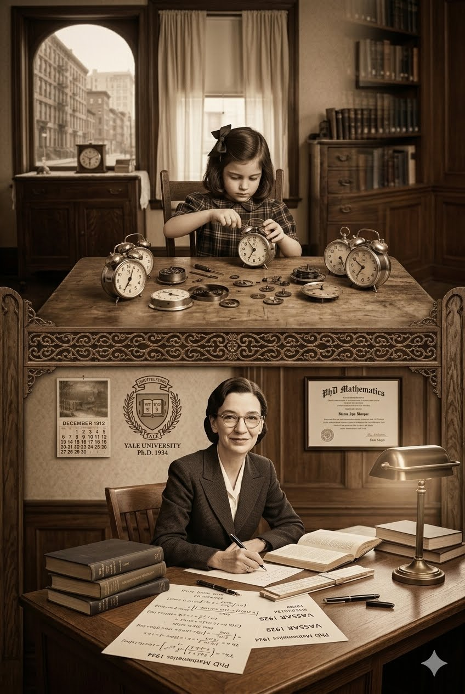

Grace Brewster Murray nasceu em 9 de dezembro de 1906, na cidade de Nova York. Desde criança, demonstrava uma curiosidade insaciável - aos sete anos, desmontou sete relógios despertadores para entender como funcionavam.
Sua família valorizava a educação. Encorajada pelos pais, Grace estudou matemática e física no Vassar College, graduando-se em 1928. Continuou seus estudos em Yale, onde obteve mestrado em 1930 e doutorado em matemática em 1934 - uma conquista rara para mulheres naquela época.
